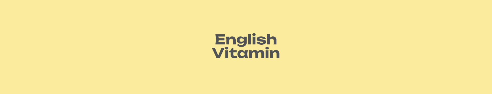
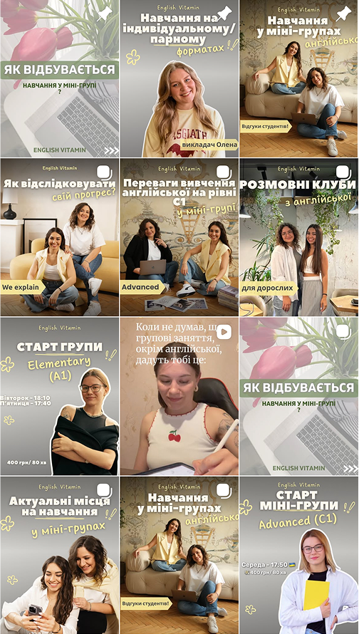
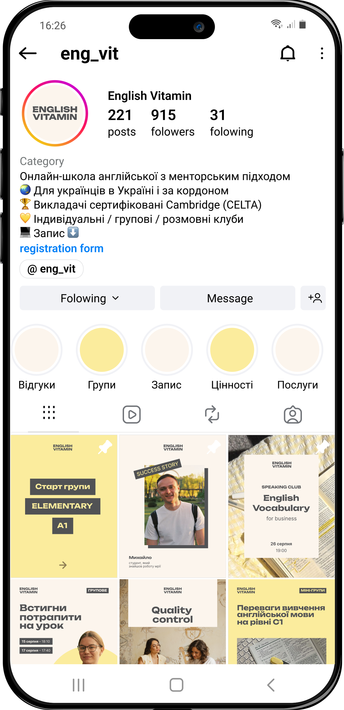
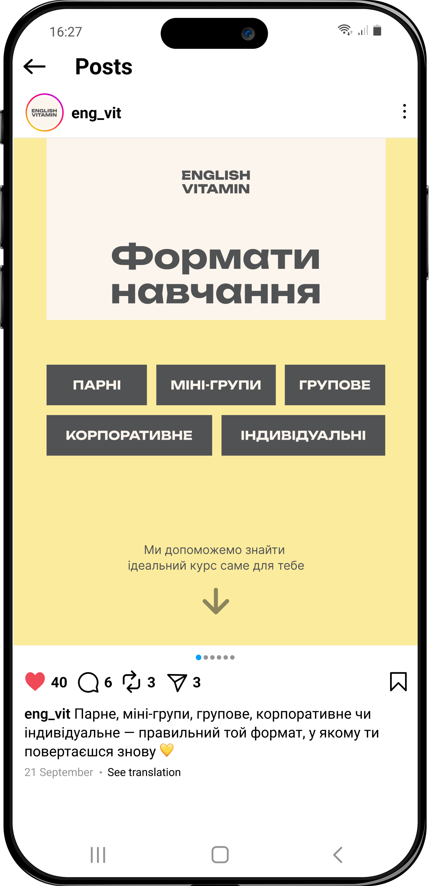

A school people already loved had outgrown its brand. I rebuilt it from positioning up — defining who English Vitamin is, how it speaks, and how it looks — and handed the founders a strategy they can run decisions through, not just a look to maintain.
See more↓English Vitamin is run by two teachers, Katya and Lera. Not a course factory — a mentor-led practice: few students, close attention, and a promise that learning English doesn't have to feel like school.
They came to me with no shared answer to one question: who are we, and how do we stay that way as we grow? The visuals shifted post to post, and the brand leaned entirely on its two founders.

I work strategy-first. A logo is an answer, and you can't answer well until you know the question.
So before any visual decision, I define the strategy: positioning, audience, voice — and only then the system that carries them.
That means the visual identity is never a style choice. It's the last step in a chain of reasoning, where every colour and typeface is there to solve something the strategy already framed.
I mapped the category on two axes: mass ↔︎ personal, and fast ↔︎ systematic. Almost everyone clustered in the same corner — mass and fast — selling atmosphere: aesthetics, energy, the feeling of a shortcut.
That corner was crowded. The opposite one — personal and systematic — was open. So the strategy was deliberate: move English Vitamin into the space the category had left behind, and own genuine support and honesty.
Competitors sell atmosphere. English Vitamin could own what the category left behind — genuine support and honesty.
Mid-rollout, a similar brand surfaced — comparable palette, adjacent niche — and the new identity suddenly felt close to someone else's. The reflex in moments like this is to react: get louder, add contrast, differentiate harder.
We didn't. We went back to the palette and asked a sharper question: how do we stand apart without harming the brand? The difference was never in the colour — it lived in the system. So we refined the palette's proportions and let the typography, composition, and tone do the distinguishing.
That's the whole point: a brand strategy isn't a document that sits still.
It's a tool that makes decisions.
One consistent system, applied post after post — the same type, spacing, and restraint, until the brand is recognizable at a glance.
The posts stay in Ukrainian — proof the brand practices the closeness it promises.


Recognizability doesn't come from a striking one-off. It comes from a system applied consistently.
English Vitamin now has a single, shared answer to who we are and how we stay that way — one that speaks for the whole school, its teachers and formats, not just the two people who started it. Most of all, the founders came away with a strategy they can make decisions with.
Early signals: the rebrand gave them the confidence to launch paid promotion for the first time, and reach scaled sharply once they did.
“Working with Vlada gave us much more than a new visual identity. We now have a much clearer understanding of who we are, what values we want to communicate, and who our audience is.”
“What mattered most was that we felt heard. What we discussed was actually reflected in the final result.”
English Vitamin didn't need to get louder to be seen. It needed a strategy honest enough to trust, and a system disciplined enough to protect it.
Brands that grow deep before they grow wide.